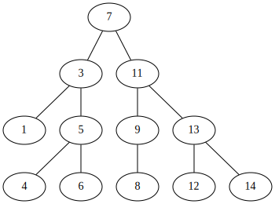

Binary Trees

This chapter introduces one of the most fundamental structures in computer science: binary trees. The use of the word tree here comes from the fact that, when we draw them, the resultant drawing often resembles the trees found in a forest. There are many ways of defining binary trees. Mathematically, a binary tree is a connected, undirected, finite graph with no cycles, and no vertex of degree greater than three.
For most computer science applications, binary trees are rooted: A special node
r, of degree at most two, is called the root of the tree. For every node u !=
r, the second node on the path from u to r is called the parent of u.
Each of the other nodes adjacent to u is called a child of u. Most of the
binary trees we are interested in are ordered, so we distinguish between the
left child and right child of u.
In illustrations, binary trees are usually drawn from the root downward, with the root at the top of the drawing and the left and right children respectively given by left and right positions in the drawing.
Because binary trees are so important, a certain terminology has developed for
them: The depth of a node u in a binary tree is the length of the path from
u to the root of the tree. If a node w is on the path from u to r, then
w is called an ancestor of u and u a descendant of w. The subtree of a
node u is the binary tree that is rooted at u and contains all of u’s
descendants. The height of a node u is the length of the longest path from u
to one of its descendants. The height of a tree is the height of its root. A
node u is a leaf if it has no children.
We sometimes think of the tree as being augmented with external nodes. Any node
that does not have a left child has an external node as its left child, and,
correspondingly, any node that does not have a right child has an external node
as its right child. It is easy to verify, by induction, that a binary tree with
n >= 1 real nodes has n + 1 external nodes.
A Basic Binary Tree
Simplest way to represent a node u is to store the at most three neighbors
(defclass binary-tree-node () ; setters for left/right that auto link parent? ((left :initarg :left :accessor left :initform nil) (right :initarg :right :accessor right :initform nil) (parent :initarg :parent :accessor parent :initform nil) (value :initarg :value :accessor value :initform nil))) ; default methods (defmethod left (obj) nil) (defmethod right (obj) nil) (defmethod parent (obj) nil) (defmethod value (obj) nil)
The binary tree itself can then be represented by a reference to its root node, r.
We can compute the depth of a node u in a binary tree by counting the number
of steps on the path from u to the root.
(defmethod depth ((u binary-tree-node)) (let ((d 0)) (loop while (parent u) do (incf d) do (setf u (parent u))) d))
Recursive Algorithms
To compute the size of (# nodes) in a binary tree rooted at node u, we
recursively compute the sizes of the two subtrees rooted at the children of u,
sum up these sizes, and add one:
(defmethod size (obj) 0) (defmethod size ((u binary-tree-node)) "Compute the size of a binary tree rooted at U" (+ 1 (size (left u)) (size (right u))))
To compute the height of a node u, we can compute the height of u’s two
subtrees, take the maximum, and add one:
(defmethod height (obj) 0) (defmethod height ((u binary-tree-node)) "Compute the height of a binary tree rooted at U" (+ 1 (max (height (left u)) (height (right u)))))
Traversing Binary Trees
The two algorithms from the previous section both use recursion to visit all the nodes in a binary tree. Each of them visits the nodes of the binary tree in the same order as the following code:
(defmethod traverse (obj) nil) (defmethod traverse ((u binary-tree-node)) (print u) (traverse (left u)) (traverse (right u)))
Using recursion this way produces very short, simple code, but it can also be problematic. The maximum depth of the recursion is given by the maximum depth of a node in the binary tree, i.e. the tree’s height. If the height of a tree is very large, then this recursion could very well use more stack space than is available, causing a crash.
To traverese a binary tree without recursion, you can use an algorithm that
relies on where it came from to determine where it will go next. If we arrive at
a node u from (parent u), then the next thing to do is to visit (left u).
If we arrive at u from (left u), then the next thing to do is to visit
(right u). If we arrive at u from (right u), then we are done visiting
u’s subtree, and so we return to (parent u). Implemented in the following:
(defun traverse2 () (flet ((get-next (curr prev) (cond ((eql prev (parent curr)) (cond ((left curr) (left curr)) ((right curr) (right curr)) (t (parent curr)))) ((eql prev (left curr)) (if (right curr) (right curr) (parent curr))) (t (parent curr))))) (let ((u *r*) (prev nil) (next nil)) (loop while u do (setf next (get-next u prev) prev u u next)))))
The same facts that can be computed with recursive algorithms can also be
computed in this way, without recursion. For example, to compute the size of the
tree we keep a counter, n, and increment n whenever visiting a node for the
first time.
(defun size2 () (let ((u *r*) (prev nil) (next nil) (n 0)) (flet ((get-next (curr prev) (cond ((eql prev (parent curr)) (progn (incf n) (cond ((left curr) (left curr)) ((right curr) (right curr)) (t (parent curr))))) ((eql prev (left curr)) (if (right curr) (right curr) (parent curr))) (t (parent curr))))) (loop while u do (setf next (get-next u prev) prev u u next))) n))
In some implementations of binary trees, the parent field is not used. When
this is the case, a non-recursive implementation is still possible, but the
implementation has to used a list (or stack) to keep track of the path from the
current node to the root.
A special kind of traversal that does not fit the pattern of the above functions
is the breath-first traversal. In a breadth-first traversal, the nodes are
visited level-by-level starting at the root and moving down, visiting the nodes
at each level from left to right. This is similar to the way that we would read
a page of English text. Breath-first traversal is implemented using a queue q
that initially only contains the root, r. At each step, we extract the next
node u from q, process u and add (left u) and (right u) (if they
aren’t empty) to q:
(defun bf-traverse () (let ((q (list *r*)) (u nil)) (loop while q do (setf u (pop q)) do (if (left u) (setf q (append q (list (left u))))) do (if (right u) (setf q (append q (list (right u))))) )))
An Unbalanced Binary Search Tree
A Binary Search Tree is a special kind of binary tree in which each node u
also stores a data value, (value u), from some total order. The data values in a
binary search tree obey the binary search tree property: For a node u, every
data value stored in the subree rooted at (left u) is less than (value u) and
every data value stored in the subree rooted at (right u) is greater than (value
u).
Searching
The binary search tree property is extremely useful because it allows us to
quickly locate value, value, in a binary search tree. To do this we start
searching for value at the root r. When examining a node u, there are three
cases:
- If
(< x (value u)), then the search proceeds to(left u). - If
(> x (value u)), then the search proceeds to(right u). - If
(= x (value u)), then we have found the node containingx.
The search terminates when Case 3 occurs or when (not u). In the former case,
we found x. In the latter case, we conclude that x is not in the binary
search tree.
(defun find-eq (x) (let ((u *r*) (comp nil)) (loop while (and u (not (eql comp 0))) do (if u (setf comp (- x (value u)))) do (setf u (cond ((< comp 0) (left u)) ((> comp 0) (right u)) (t u)))) (value u)))
Two examples of searches in a binary search tree are shown. As the second
example shows, even if we don’t find x in the tree, we still gain some
valuable information. If we look at the last node u at which Case 1 occured,
we see that (value u) is the smallest value in the tree that is greater than
x. Similarly, the last node at which Case 2 occured contains the largest value
in the tree that is less than x. Therefore, by keeping track of the last node
z at which Case 1 occurs, a Binary Search Tree can implement the (find x)
operation that returns the smallest value stored in the tree that is greater
than or equal to x.
(defun find-geq (x) "Find X or the smallest value greater than X in the binary tree rooted at *R*" (let ((w *r*) (z nil) (comp nil) (found nil)) (loop while (and w (not (eql comp 0))) do (setf comp (- x (value w))) do (cond ((< comp 0) (setf z w w (left w))) ((> comp 0) (setf w (right w))) (t (setf found t)))) (if found (value w) (value z))))
Addition
To add a new value x to a Binary Search Tree, we first search for x. If we
find it, then there is no need to insert it. Otherwise, we store x at a leaf
child of the last node p encountered during the search for x. Whether the
new node is the left or right child of p depends on the result of comparing
x and (value p).
(defun find-last (x) (let ((w *r*) (prev nil) (comp nil) (found nil)) (loop while (and w (not (eql comp 0))) do (setf comp (- x (value w)) prev w) do (cond ((< comp 0) (setf w (left w))) ((> comp 0) (setf w (right w))) (t (setf found t)))) (if found w prev)))
(defun add-child (p u) "Add U as a child of P" (if (not p) ; inserting into empty tree (setf *r* u) (let ((comp (- (value u) (value p))) (found nil)) (cond ((< comp 0) (setf (left p) u)) ((> comp 0) (setf (right p) u)) ; U is already in the tree (t (setf found t))) (if (not found) (setf (parent u) p)) (not found))))
(defun add (x) "Add a new node to *R* with value of X if not already in *R*" (let ((p (find-last x)) (nx (make-instance 'binary-tree-node :value x))) (add-child p nx)))
The most time-consuming part of this process is the initial search for x,
which takes an amount of time proportional to the height of the newly added node
u. In the worst case, this is equal to the height of the binary search tree.
Removal
Deleting a value stored in a node u of a binary search tree is a little more
difficult. If u is a leaf, then we can just detach u from its parent. Even
better: if u has only one child, then we can splice u from the tree by
having (parent u) adopt u’s child.
(defun splice (u) (let ((s nil) (p nil)) (setf s (if (left u) (left u) (right u))) (if (eql u *r*) (setf *r* s) (progn (setf p (parent u)) (if (eql (left p) u) (setf (left p) s) (setf (right p) s)))) (if s (setf (parent s) p))))
Things get tricky, though, when u has two children. In this case, the simplest
thing to do is to find a node w that has less than two children and such that
(value w) can replace (value u). To maintain the binary search tree
property, (value w) should be close to the value of (value u). For example,
choosing w such that (value w) is the smallest value greater than (value
u) will work. Finding the node w is easy; it is the smallest value in the
subtree rooted at (right u). This node can be easily removed because it has no
left child.
(defun remove-node (u) (if (or (not (left u)) (not (right u))) (splice u) (let ((w (right u))) ; get the smallest value in the subtree to the right of u (loop while (left w) do (setf w (left w))) (setf (value u) (value w)) (splice w))))
Summary
The (find-geq x), (add x), and (remove-node x) operations in a binary
search tree each involved following a path from the root of the tree to some
node in the tree. Without knowing more about the shape of the tree it is
difficult to say much about the length of this path, except that it is less than
n, the number of nodes in the tree. The followning (unimpressive) theorem
summarizes the performance of the binary search tree data structure:
Binary search tree implements the SSet interface and supports the operations add, remove, and find in O(n) time per operation.
Theorem ## compares poorly with theorem ## which shows that the SkiplistSSet
structure can implement the SSet interface with O(log n) expected time per
operation. The problem iwht the binary search tree structure is that it can
become unbalanced. Instead of looking like the tree in Figure ## it can look
like a long chain of nodes, all but the last having exactly one child.
There are a number of ways of avoiding unbalanced binary search trees, all of which lead to data structures that have O(log n) time operations. In Chapter 7 we show how O(log n) expected time operations can be achieved with randomization. In Chapter 8 we show how O(log n) amortized time operations can be achieved with partial rebuilding operations. In Chapter 9 we show how O(log n) worst-case time operations can be achieved by simulating a tree that is not binary: one in which nodes can have up to four children.
Testing
I’ve added this section to document tests of the code I’ve translated from the book.
Setup
(defun test-setup () "Helper function to rebuild the tree on demand" (defparameter *r* (make-instance 'binary-tree-node :value 7)) (defparameter *n3* (make-instance 'binary-tree-node :value 3 :parent *r*)) (defparameter *n11* (make-instance 'binary-tree-node :value 11 :parent *r*)) (defparameter *n1* (make-instance 'binary-tree-node :value 1 :parent *n3*)) (defparameter *n5* (make-instance 'binary-tree-node :value 5 :parent *n3*)) (defparameter *n9* (make-instance 'binary-tree-node :value 9 :parent *n11*)) (defparameter *n13* (make-instance 'binary-tree-node :value 13 :parent *n11*)) (defparameter *n4* (make-instance 'binary-tree-node :value 4 :parent *n5*)) (defparameter *n6* (make-instance 'binary-tree-node :value 6 :parent *n5*)) (defparameter *n8* (make-instance 'binary-tree-node :value 8 :parent *n9*)) (defparameter *n12* (make-instance 'binary-tree-node :value 12 :parent *n13*)) (defparameter *n14* (make-instance 'binary-tree-node :value 14 :parent *n13*)) (with-slots (left right) *r* (setf left *n3*) (setf right *n11*)) (with-slots (left right) *n3* (setf left *n1*) (setf right *n5*)) (with-slots (left right) *n11* (setf left *n9*) (setf right *n13*)) (with-slots (left right) *n5* (setf left *n4*) (setf right *n6*)) (setf (left *n9*) *n8*) (with-slots (left right) *n13* (setf left *n12*) (setf right *n14*)))
TEST-SETUP
Test size
(test-setup) (eql 12 (size *r*))
T
Test height
(test-setup) (eql 4 (height *r*))
T
Test size2
(test-setup) (eql 12 (size2))
T
Test find-eq
6 is in the tree, so it should be found.
(find-eq 6)
6
10 is not in the tree, so nothing should be found
(find-eq 10)
NIL
Test find-geq
Since 10 isn’t in the tree, the next largest value (11) should be returned.
(find-geq 10)
11
Test find-last
Since a node with value 6 is already in the tree, that node should be returned.
(eql (find-last 6) *n6*)
T
There is no node with value 10, *n9* would be the last node looked at before
exhausting the search.
(eql (find-last 10) *n9*)
T
Test add
10 isn’t in the tree, and should be to the right of 9 when added
(test-setup) (add 10) (eql (value (right *n9*)) 10)
T
Test splice
Splicing *n4* should make (left *n5*) nil.
(splice *n4*) (not (left *n5*))
T
Test remove-node
Removing *n11* should update the value of *n11* to be 12 and remove the left child of *n13*.
(test-setup) (remove-node *n11*) (and (eql (value *n11*) 12) (not (left *n13*)))
T